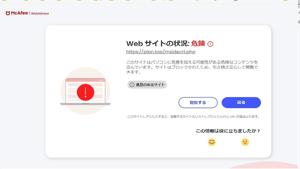

うるがいの話 ある日
最新: ２０２４年初の詐欺メール【うるがいの話 ある日】とは 一日だけのプログです
『うるがいの話』の最新一日だけのプログで、通信料が少なく経済的だ。カニの画像をクリックすると全ての日付が載る『うるがいの話』サイトを表示します
|
|
【うるがいの話】 うるがい(ｳﾙｶﾞｲ urugai)とは、『もずくがに』の名前でとても大きくなります。 |
|---|---|
|
|
【カミマヤーの話】 猫のことを方言でマヤーといいます。カミマヤー（kamimayaa）とは、神の猫のことです。 |
|
【たながぁの音楽】 たながぁ（ﾀﾅｶﾞｰ tanagaa）とは手長えびのことで、何種類かあり大きいのは車 エビぐらいになります。 |

|
【ぶながぁの話】 ぶながぁ(ﾌﾞﾅｶﾞｰ bunagaa)とは、赤い髪の毛、赤い身体、そして身長は１ｍ２０ｃｍ ぐらい、川の蟹を食べているの目撃された。場所は沖縄県国頭郡大宜味村のと ある村僕の隣近所に住んでいる爺さんから、聞いた話です。 |
|
|
【ギーマの話】 ギーマ(giima)とは、山原の里山に咲くスズランに似た、 花を付けます。実は食べられます、 気が付くと口の周りが紫になっています。 |
2024年01月08日 (月）２０２４年初の詐欺メール
15:09

お昼１時になると、那覇市の広報スピーカーから『還付金詐欺』の注意が放送
される。【重要】解約予告のお知らせ（ＥＴＣ利用照会サービス事務のメール
が来た。ん？、なにこれ
ヤフー問い合わせ
2023/12/20/に、ETCサービスから、重要なお知らせというメールが届
きました。ETC利用紹介サービス事務局からのお知らせのメールでした。
内容は
2023年12月22日までに、下記のURLから本サービスにログインして、個人情
報の更新をお願いいたします。
ETC利用照会サービス事務局
年中無休9：00～18：00
電話番号 0570-001069
ETC利用しているので、個人情報を入力してしまいました。
実際に運営されている事業なのでしょうか？
教えて頂きたくメールいたしました。よろしくお願いします。
私は、リンク先を押さずとりあえず、控えている正規のアドレスからログイン
をする。フムフム大丈夫、せっかくなのでメールのリンク先をクリニックして
みた。セキュリテイ対策ソフトのマカフィーが、ダメと怒っている！。ま、そ
うだろうな。ヤフー問い合わせした上の人は、その後大変なことになってしま
ったかも。
１４時５１分 ビットコインの総資産 ￥１８、２６１（↓１８４）